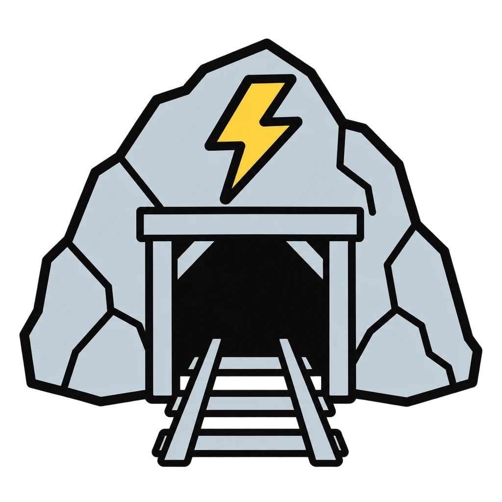
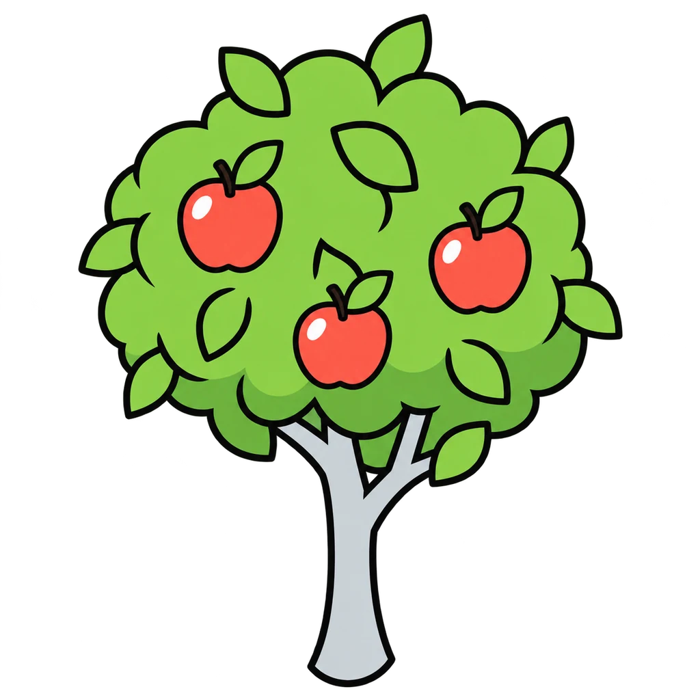
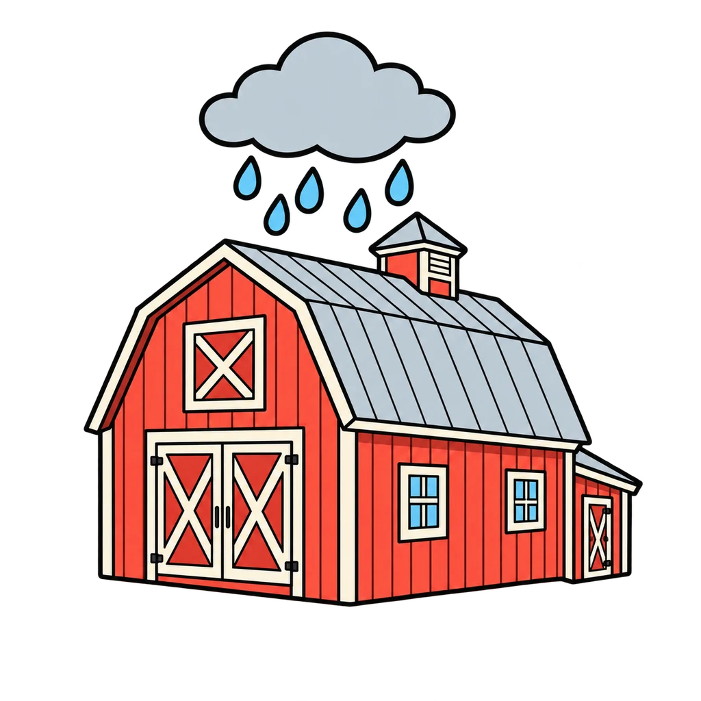

Reviews Lesson 2.15. Reviews Lesson 2.15, both days: Round 1 is Part A of Handout 02.15 (the eight news cards) plus eight dispatches from the paper ledger script in Handout 02.19, all scored on the venture and the direction; Round 2 is Part B (the six headlines) plus the two Day 2 do now headlines, the hype dispatch from the Day 4 script, the rewritten fact from the key, and the lesson's social media example. Use Round 1 as the warm-up before any trading window from Lesson 2.16 on, and Round 2 the day before the Investor Report, since 'names the dispatch' and the three tests are the Meets descriptor on Rubric 02 criterion 2. grade 6 plays Round 1 with the eight Part A cards only and Round 2 with four headlines. Grade 6 plays Round 1 with the eight Part A cards only and Round 2 with four headlines.
Fact or Hype
A dispatch appears. Tap the venture it moves, then Up, Down, or No change. Then a headline appears, and you tap Fact or Hype using three tests: who says it, is there a number, does it tell you to hurry.
How to play
- More buyers than sellers: the price goes up. More sellers than buyers: the price goes down. News changes how many people want to buy or sell.
- Who says it? A named source (the venture, the Crown, a reporter) passes. Insiders, everyone, or no source fails.
- Is there a number? A percent, an amount, a date, or a count passes. No number fails.
- Does it tell you to hurry? No rush words passes. Now, last chance, before it's too late, everyone is buying fails.
- Two or three points: probably a fact. Zero or one: hype.



Done
The ones to study:
Worth knowing by heart:
- Handout 02.15: the rule in two lines and the four dispatch families
- Part A: match the news to the price change
- Part B: the three tests, fact or hype
- When a headline says buy now, who benefits if you do?